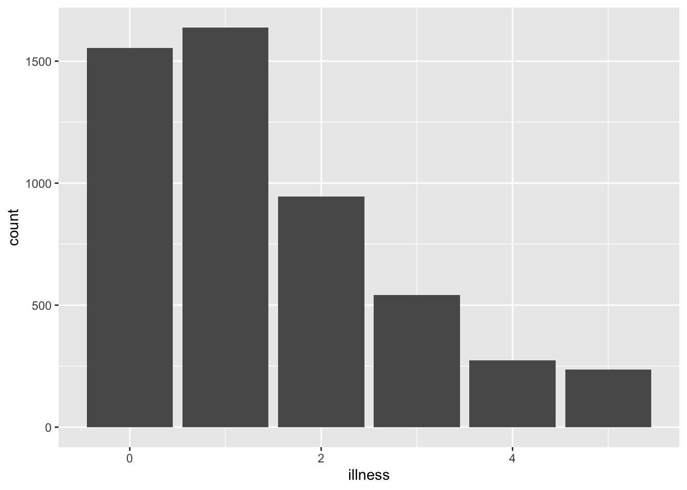
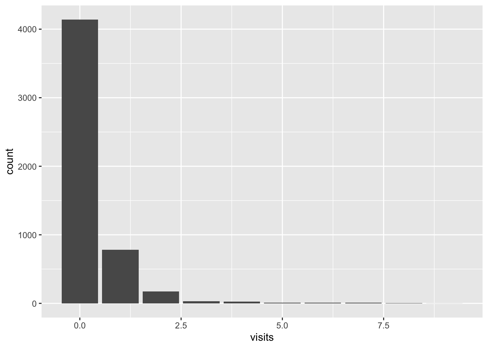

A paragraph about an idea, nicely spaced from the following paragraph.
A paragraph about another idea, again spaced from teh earlier paragraph.
3.2.5 R Chunks
library(tidyverse)
── Attaching core tidyverse packages ──────────────────────── tidyverse 2.0.0 ──
✔ dplyr 1.2.1 ✔ readr 2.2.0
✔ forcats 1.0.1 ✔ stringr 1.6.0
✔ ggplot2 4.0.3 ✔ tibble 3.3.1
✔ lubridate 1.9.5 ✔ tidyr 1.3.2
✔ purrr 1.2.2
── Conflicts ────────────────────────────────────────── tidyverse_conflicts() ──
✖ dplyr::filter() masks stats::filter()
✖ dplyr::lag() masks stats::lag()
ℹ Use the conflicted package (<http://conflicted.r-lib.org/>) to force all conflicts to become errors
library(AER)
Loading required package: car
Loading required package: carData
Attaching package: 'car'
The following object is masked from 'package:dplyr':
recode
The following object is masked from 'package:purrr':
some
Loading required package: lmtest
Loading required package: zoo
Attaching package: 'zoo'
The following objects are masked from 'package:base':
as.Date, as.Date.numeric
Loading required package: sandwich
Loading required package: survival
Warning in geom_histogram(stat = "count"): Ignoring unknown parameters:
`binwidth` and `bins`

Various Code options:
echo: This controls whether the code itself is included in the document. For instance, #| echo: false would mean the code will be run and its output will show, but the code itself would not be included in the document.
include: This controls whether the output of the code is included in the document. For instance, #| include: false would run the code, but would not result in any output, and the code itself would not be included in the document.
eval: This controls whether the code should be included in the document. For instance, #| eval: false would mean that the code is not run, and hence there would not be any output to include, but the code itself would be included in this document.
warning: This controls whether warnings should be included in the document. For instance, #| warning: false` would mean that warnings are not included.
message: This controls whether messages should be included in the document. For instance, #| message: false would mean that messages are not included in the document.
Example

Most people did not visit a doctor in the past week.
There were some people that visited a doctor once, and then…
Underscores are used to get subscripts: y_1 for \(y_i\). And we can get subscript of more than one item by surrounding it with curly braces: y_{i,c} for \(`y_{i,c}`\). In this case we wanted math mode within the line, and so we surrounded these with only one dollar sign as opening and closing tags.
Greek letters are typically presented by a backslash. Common Greek letters include: \alpha for \(\alpha\), \beta for \(\beta\), \delta for \(\delta\), \epsilon for \(\epsilon\), \gamma for \(\gamma\), \lambda for \(\lambda\), \mu for \(\mu\), \phi for \(\phi\), \pi for \(\pi\), \Pi for \(\Pi\), \rho for \(\rho\), \sigma for \(\sigma\), \Sigma for \(\Sigma\), \tau for \(\tau\), and \theta for \(\theta\).
LaTeX math mode assumes letters are variables and so makes them italic, but sometimes we want a word to appear in normal font because it is not a variable, such as “Normal”. In that case we surround it with \mbox{}, for instance \mbox{Normal} for Normal.
We line up equations across multiple lines using \begin{aligned} and \end{aligned}. Then the item that is to be lined up is noted by an ampersand. The following is a model that we will estimate in Chapter 16.
\[
\begin{aligned}
y_i|\pi_i & \sim \mbox{Bern}(\pi_i) \\
\mbox{logit}(\pi_i) & = \beta_0+ \alpha_{g[i]}^{\mbox{gender}} + \alpha_{a[i]}^{\mbox{age}} + \alpha_{s[i]}^{\mbox{state}} + \alpha_{e[i]}^{\mbox{edu}} \\
\beta_0 & \sim \mbox{Normal}(0, 2.5)\\
\alpha_{g}^{\mbox{gender}} & \sim \mbox{Normal}(0, 2.5)\mbox{ for }g=1, 2\\
\alpha_{a}^{\mbox{age}} & \sim \mbox{Normal}\left(0, \sigma^2_{\mbox{age}}\right)\mbox{ for }a = 1, 2, \dots, A\\
\alpha_{s}^{\mbox{state}} & \sim \mbox{Normal}\left(0, \sigma^2_{\mbox{state}}\right)\mbox{ for }s = 1, 2, \dots, S\\
\alpha_{e}^{\mbox{edu}} & \sim \mbox{Normal}\left(0, \sigma^2_{\mbox{edu}}\right)\mbox{ for }e = 1, 2, \dots, E\\
\sigma_{\mbox{gender}} & \sim \mbox{Exponential}(1)\\
\sigma_{\mbox{state}} & \sim \mbox{Exponential}(1)\\
\sigma_{\mbox{edu}} & \sim \mbox{Exponential}(1)
\end{aligned}
\] Finally, certain functions are built into LaTeX. For instance, we can appropriately typset “log” with \log.
3.2.7 Cross-References
It can be useful to cross-reference figures, tables, and equations. This makes it eaiser to refer to them in the text. To do this for a figure we refer to the name of the R chunk that creates or contains the figure. For instance:
Figure 1: Number of illnesses in the past two weeks, based on the 1977-1978 Australian Health Survey
Then (@fig-uniquename) would produce: (Figure 1) as the name of hte R chunk in fig-uniquename. We need to add “fig” to the start of the chunk name so that Quarto knows that this is a figure. We then include a “fig-cap:” in the R chunk that specifies a caption.
We can add #| layout-ncol: 2 in an R chunk within a Quarto document to have two graphs appear side by side (Figure 2). Here Figure 2 (a) uses the minimal theme and Figure 2 (b) uses the classic theme. THese both cross-reference the same label #| label: fig-doctorgraphsidebyside in the R chunk, with an addtional option added in the R chunk of #| fig-subcap: ["Number of illnesses","Number of visits ot the doctor"] which provides the sub-captions. The addition of a letter in-text is accomplished by adding “-1” and “-2” to the end of the label when it is used in-text (@fig-doctorgraphsidebyside), @fig-doctorgraphsidebyside-1, and @fig-doctorgraphsidebyside-2 for (Figure 2), Figure 2 (a), and Figure 2 (b) respectively.
We can take a similar approach to cross-reference tables. For instance, (@tbl-docvisittable) will produce: (?@tbl-docvisttable). In this case we specify “tbl” at the start of the label so that Quarto knows that it is a table. And we specify caption for the table with “tbl-cap:”.
library(tinytable)#| label: tbl-docvisittable#| tbl-cap: "Distribution of the number of doctor visits"DoctorVisits |>count(visits) |>tt() |>style_tt(j =2, align ="r") |>setNames(c("Number of visits", "Occurrences"))
Number of visits
Occurrences
0
4141
1
782
2
174
3
30
4
24
5
9
6
12
7
12
8
5
9
1
Finally, we can also cross-reference equations. To do that we need to add tag such as {#eq-macroidentity} which we then reference.
\[
Y = C + I +G + (X - M)
\tag{1}\]
For instance, we then use @eq-gdpidentity to produce Equation 1.
3.3 R Projects and file structure
There are a variety of ways to setup a folder. A variant of Wilson et. al.:
Here we have an data folder that contains simulated data, the unedited data that should not be written over (Wilson et al. 2017) and the analysis data that were put together. The model folder contains saved model estimates. The other folder contains aspects like a datasheet, literature, LLM usage, and sketches, which are useful depending on the circumstances. The paper folder contains the Quarto document and a BibTeX file. Finally, scripts contain the code to simulate, download, test, and analyze the data.
Useful other aspects include a README.md which will specify overview details about the project, and a LICENSE. An example of what to put in the README is here. Another helpful variant of this project skeleton is provided by Mineault and The Good Research Code Handbook Community (2021).
References
R Core Team. 2021. R: A Language and Environment for Statistical Computing. R Foundation for Statistical Computing. https://www.R-projects.org/.